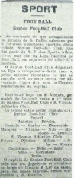
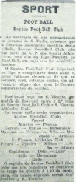

O Santos Futebol Clube foi fundado por iniciativa de três esportistas da cidade, Francisco Raymundo Marques, Mário Ferraz de Campos e Argemiro de Souza Júnior. Eles convidaram a todos os interessados para participar da reunião inaugurau do novo clube, que foi constituido para ser destinado a prática do futebol no começo do século passado estava engatinhando no Brasil.
A reunião histórica aconteceu na tarde do domingo, 14 de Abril de 1912, na sede do Clube Concórdia, na antiga rua do Rosário, 18 (hoje rua João Pessoa, 8/10). São considerados como sócios-fundadores todos os 39 participanntes dessa reunião.
No dia da fundação, o nome da entidade foi sugerido por Edmundo Jorge de Araújo: Santos Foot-Ball Club e as cores dos uniformes da nova agramiação, que seria presidida no primeiro ano de existência por Sizini Patusca, eram azul e o branco, com fios dourados entre elas.
No dia 31 de março do ano seguinte as cores do Clube, por sugestão de Paulo Peluccio, passaram a ser calção branco e camisa listrada de branco e preto. O Conselho Deliberativo do Clube teve início no dia 28 de janeiro de de 1932 e o primeirio presidente foi Flamínio Levy.
No começo de sua gloriosa caminhada entra para a vida do clube, Urbano Vilella Caldeira Filho, um homem que dedicou toda a vida ao time que tanto amou até o falecimento, no ano de 1933. Urbano Caldeira foi atleta, técnico, dirigente e hoje é um dos patronos do Santos Futebol Clube. Em sua homenagem o nome do estádio que foi erguido, no ano de 1916, leva seu nome como reconhecimento de seu amor ao Alvinegro Praiano.
As primeiras conquistas importantes na história do time começaram em 1913 com a conquista do campeonato santista, repetindo o feito em 1915, jogando como o apelido de “União Futebol Clube” por imposição da diretoria da Associação Paulista de Esportes Atléticos.
No ano de 1927 surge no time um ataque que até hoje não foi superado em jogos do campeonato paulista, com uma média de 6,25 gols por partida e que ficou eternizado como o time do “Ataque dos 100 gols”. Ataque esse que era formado por Omar, Camarão, Feitiço, Araken e Evangelista.
O primeiro Campeonato Paulista vencido pelo Clube é o do ano de 1935, título esse conquistado na casa do adversário na capital paulista. A equipe volta a ganhar os certames paulistas em 1955 e 1956 e novamente no ano de 1958, quando então já tinha em suas fileiras um garoto apelidado de Pelé, que nos anos seguintes se tornaria o melhor jogador de futebol em todos os tempos.
Na chamada “Década de Ouro”, nos anos de 1960, o time conquistou o mundo exibindo um futebol digno de aplausos, com conquistas constantes, não só no futebol brasileiro como também no planeta. A coroação maior desse time ícone da cidade de Santos aconteceu no ano de 1962, quando o Alvinegro mais famoso do mundo venceu todos os certames mais importantes disputados nesse ano e sagrando-se no ano seguinte Bicampeão Mundial. A FIFA outorgou ao clube o título de “O melhor time do século nas Américas”.
Nos dias atuais o Santos Futebol Clube é considerado como o legítimo Octocampeão Brasileiro por suas conquistas nacionais nos anos de 1961 a 1965, 1968, 2002 e 2004. Nos campeonatos paulistas foram 22 conquistas, na Taça Libertadores da América foram 03 conquistas e nos Mundiais Interclubes foram duas conquistas. Revelando jogadores como Araken Patusca, Antoninho, Pelé, Robinho, Paulo Henrique Ganso e Neymar o time continua sendo o orgulho de toda a gente Alvinegra nos seus 111 anos de história.
 
